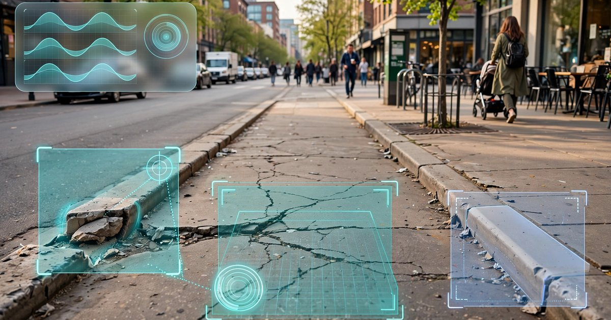

System and Method for Automatic Detection and Geolocation of Pedestrian Infrastructure Accessibility Barriers Using Wearable IMU-Camera Sensor Fusion and Crowd-Sourced Edge Inference

Abstract
Disclosed is a system and method for automatic detection, classification, and geolocation of pedestrian infrastructure accessibility barriers using sensor fusion between inertial measurement units (IMUs) and cameras embedded in wearable devices such as smart glasses, smartwatches, or smartphones. The system uses gait perturbation signatures extracted from 6-axis IMU data (accelerometer + gyroscope) as an attention trigger that activates computationally expensive visual classification only when a physical barrier is likely present, reducing average power consumption by 85-92% compared to continuous video analysis. When a gait anomaly is detected, characterized by sudden changes in stride length, vertical acceleration impulse, lateral sway, or foot clearance proxy, the system captures a short burst of egocentric camera frames centered on the perturbation event and runs an on-device object detection model to classify the barrier type (broken sidewalk, missing curb cut, excessive cross-slope, vertical discontinuity, obstructed path, absent tactile warning surface). Classified barriers are geolocated using fused GNSS/visual-inertial odometry with sub-meter accuracy and uploaded to a federated spatial database. Across a fleet of participating wearable users, the system builds and continuously updates a city-scale accessibility barrier map without requiring explicit user input, manual surveys, or dedicated sensing infrastructure.
Field of the Invention
This invention relates to wearable computing and assistive technology, specifically to the use of consumer wearable sensor fusion for passive, crowd-sourced detection and mapping of pedestrian infrastructure accessibility barriers for compliance monitoring, municipal planning, and assistive navigation.
Background
The Americans with Disabilities Act (ADA) of 1990 requires that pedestrian infrastructure (sidewalks, curb ramps, crosswalks, and shared-use paths) be accessible to individuals with disabilities. The U.S. Access Board's Public Rights-of-Way Accessibility Guidelines (PROWAG) specify technical standards including maximum running slope (5%), maximum cross-slope (2%), minimum clear width (48 inches), curb ramp requirements at every pedestrian crossing, and detectable warning surface placement. Despite 35 years of federal mandate, compliance remains poor. A 2011 National Academies study estimated that fewer than 50% of U.S. intersections had compliant curb ramps, and a 2023 survey by Frackelton et al. in Transportation Research Part D found that even in cities with active ADA transition plans, 23-41% of sidewalk segments had at least one barrier exceeding ADA standards.
Current methods for assessing pedestrian infrastructure accessibility are expensive and infrequent:
- Manual field surveys: Trained inspectors walk routes with digital inclinometers, measuring tapes, and GPS receivers. Cost: $15-25 per curb ramp (FHWA estimate), $500-1,200 per mile of sidewalk. Most municipalities complete a full inventory once per decade or never. Portland, Oregon, one of the most proactive U.S. cities, required 7 years to complete its sidewalk inventory.
- Vehicle-mounted LiDAR/imaging: Companies like Pathway Services and AI Mapping Solutions deploy vehicle-mounted sensor arrays that can survey 30-50 miles of sidewalk per day. Cost: $100-300 per mile, with a minimum project cost of $10,000-30,000. Coverage is limited to vehicle-accessible routes and cannot assess sidewalk conditions that require pedestrian-level observation (tactile surfaces, minor vertical discontinuities under 0.5 inches).
- Satellite and aerial imagery: Hosseini et al. (2022) demonstrated sidewalk extraction from aerial imagery, but resolution (typically 10-30 cm/pixel) is insufficient to detect the fine-grained barriers that matter for wheelchair users: cross-slopes, small vertical displacements (the ADA threshold is 0.25 inches without beveling), and tactile warning surface presence or degradation.
- Crowd-sourced manual reporting: Apps like Project Sidewalk (University of Washington) use Google Street View imagery and volunteer labelers to identify accessibility barriers. While demonstrating the value of crowd-sourced assessment, the approach depends on volunteer availability, Street View coverage (which is vehicle-level, not pedestrian-level), and image recency (Street View imagery in many areas is 2-5 years old).
Wearable IMU-based gait analysis is well established in clinical contexts. Prasanth et al. (Sensors, 2021) reviewed wearable sensor systems for gait analysis and found that consumer-grade IMUs in smartwatches achieve stride length estimation accuracy within 5% and step detection accuracy above 97%. Soltani et al. (IEEE JBHI, 2021) demonstrated that IMU gait signatures can detect terrain transitions (grass-to-pavement, pavement-to-gravel) with 91% accuracy using a random forest classifier on smartwatch accelerometer data.
The gap in the art is a system that: (a) uses gait perturbation as a low-power attention trigger for visual barrier classification rather than relying on continuous video analysis; (b) fuses IMU and camera data at the edge to classify specific ADA barrier types; (c) operates passively during normal walking without user input; and (d) aggregates detections across a fleet of wearable users to build continuously updated accessibility maps at city scale.
Detailed Description
1. Gait Perturbation Detection Module
The system continuously processes 6-axis IMU data (3-axis accelerometer, 3-axis gyroscope) from a wearable device at 100 Hz. The IMU may be located at the wrist (smartwatch), head (smart glasses), or hip (smartphone in pocket); the system maintains device-position-specific gait models for each mounting location. Raw IMU signals undergo the following processing pipeline:
Stride segmentation: A peak-detection algorithm identifies heel-strike events from the vertical acceleration signal (z-axis in the device frame, rotated to world frame using the gyroscope-derived orientation quaternion). Consecutive heel strikes define stride intervals. The system maintains a rolling 20-stride buffer of gait parameters: stride duration (typical: 0.95-1.15 seconds), stride length (estimated via double integration with zero-velocity update at each heel strike, typical: 1.2-1.6 meters for walking), vertical acceleration peak (typical: 1.2-1.8 g), and lateral sway amplitude (roll-axis gyroscope integral over each stride, typical: 2-5 degrees).
Baseline adaptation: The system computes a running personalized gait baseline using an exponentially weighted moving average (EWMA) with a decay constant of 50 strides (~60-75 meters of walking). This baseline adapts to the individual user's walking speed, shoe type, and gait characteristics over time, while remaining stable enough to detect abrupt perturbations.
Perturbation classification: A perturbation event is flagged when any of the following conditions are met within a single stride or pair of consecutive strides:
- Vertical impulse anomaly: Peak vertical acceleration exceeds the personalized baseline by more than 2.5 standard deviations, indicating a step-down (curb, broken pavement) or stumble. Discriminates from stairs using stride duration consistency (stairs produce rhythmic vertical impulses; barriers produce isolated spikes).
- Stride length discontinuity: Stride length decreases by more than 30% relative to the 5-stride rolling average, indicating a hesitation or shortened step in response to a visual or proprioceptive obstacle detection.
- Lateral deviation: Lateral sway exceeds baseline by more than 3 standard deviations or heading changes by more than 15 degrees within a single stride, indicating an avoidance maneuver around an obstruction.
- Cross-slope response: Sustained mediolateral tilt (detected via the gyroscope roll integral) exceeding 3 degrees over 3 or more consecutive strides, potentially indicating an excessive sidewalk cross-slope.
- Foot clearance proxy: For wrist- and head-mounted IMUs, the system estimates terrain roughness from the high-frequency vertical acceleration variance (20-50 Hz band) during the swing phase. An increase in swing-phase vibration above baseline indicates rough or uneven walking surface.
2. Visual Barrier Classification Module
When the gait perturbation module flags an event, the system activates the visual classification pipeline. For devices with a front-facing camera (smart glasses, smartphone held or chest-mounted), the system captures a burst of 5-10 frames at 10 fps, centered on the estimated time-of-barrier-encounter, defined as the perturbation event timestamp minus the estimated visual-to-motor reaction delay of 0.3-0.8 seconds (user-adaptive).
Captured frames are processed by an on-device object detection model (architecture: MobileNetV3-Small backbone with SSD detection head, quantized to INT8, model size approximately 4.2 MB). The model is trained to detect and classify the following barrier categories:
- B1 — Vertical discontinuity: Raised or displaced sidewalk panels, tree root heave, or pavement edge drop-offs exceeding 0.25 inches (the ADA threshold requiring edge treatment). The model estimates displacement height from monocular depth cues and known camera height.
- B2 — Missing or degraded curb ramp: Intersection corners lacking a curb ramp, or existing ramps with non-compliant geometry (lip height exceeding 0.25 inches, running slope exceeding 8.33%, or missing detectable warning surface).
- B3 — Surface degradation: Cracked, spalled, or missing sidewalk segments where the gap width or vertical displacement exceeds accessibility thresholds. Includes gravel intrusion and vegetation overgrowth reducing effective sidewalk width below 48 inches.
- B4 — Obstruction: Permanent or semi-permanent obstacles in the pedestrian path of travel: utility poles placed within the sidewalk, overgrown vegetation, improperly placed street furniture, construction barriers without accessible detour signage, or parked vehicles/scooters blocking the path.
- B5 — Missing tactile warning: Absence of truncated dome detectable warning surfaces at curb ramps, transit platform edges, or other required locations. Detected via texture classification of the ground plane in the image region corresponding to the ramp base.
- B6 — Excessive cross-slope: When the IMU detects sustained mediolateral tilt, the visual system attempts to confirm cross-slope by analyzing the perspective geometry of the sidewalk surface relative to the horizon line. This visual confirmation supplements the IMU signal, which can be confounded by asymmetric gait.
Each detection carries a confidence score, a bounding box in the image frame, and the barrier classification. Detections below a per-category confidence threshold (0.75 for B1-B3, 0.80 for B4-B6) are stored locally but not uploaded to the shared database until corroborated by a second detection from the same or another user.
3. Geolocation and Spatial Indexing
Barrier detections are geolocated using a fused positioning pipeline:
- GNSS: Raw GNSS pseudoranges from the wearable or tethered smartphone, processed via weighted least squares with carrier-phase smoothing when available (dual-frequency GNSS on modern smartphones achieves 1-3 meter 95% CEP in open sky).
- Visual-inertial odometry (VIO): For devices with a camera and IMU (smart glasses, ARCore/ARKit-capable smartphones), the system runs VIO to maintain centimeter-level relative positioning between GNSS fixes. The VIO trajectory is anchored to GNSS at each fix, providing sub-meter absolute positioning in urban canyons where GNSS multipath degrades accuracy.
- Map snapping: Barrier positions are snapped to the nearest sidewalk segment in OpenStreetMap or a municipal sidewalk centerline database. The snap algorithm accounts for GNSS/VIO uncertainty ellipses and rejects snaps where the offset exceeds 5 meters (indicating a position in the roadway or building, likely a false positive).
Each geolocated barrier is stored as a spatial record containing: WGS84 coordinates (latitude, longitude), positional uncertainty radius, barrier classification (B1-B6), confidence score, IMU perturbation signature (anonymized feature vector, not raw data), representative image crop (privacy-filtered to remove faces and license plates before upload), device type and mounting position, timestamp, and a unique spatial hash (Geohash precision 9, approximately 4.8m × 4.8m cells) for efficient indexing and deduplication.
4. Federated Aggregation and Map Construction
Individual barrier detections from multiple users are aggregated into a shared spatial database using a federated architecture that preserves user privacy:
- On-device preprocessing: All privacy-sensitive processing (face detection and blurring, license plate redaction, removal of identifiable signage or building numbers in image crops) occurs on-device before upload. Raw IMU data is never uploaded; only the computed perturbation feature vector is transmitted. User identity is replaced with a rotating pseudonymous device token that changes weekly.
- Spatial deduplication: When a new detection falls within 3 meters of an existing barrier in the database and matches on barrier type, it is treated as a corroborating observation rather than a new barrier. The existing barrier's confidence is updated using Bayesian fusion: P(barrier|observations) is computed from the prior confidence and the new observation's likelihood, with a temporal decay factor that down-weights older observations (half-life: 90 days) to allow the map to reflect repairs.
- Barrier lifecycle tracking: Barriers accumulate corroborating observations over time. A barrier is promoted from "candidate" to "confirmed" status after 3 independent detections from at least 2 distinct device tokens. Barriers that receive no corroborating observations for 180 days and have a confidence score below 0.5 are demoted to "historical" status. Barriers that receive explicit "barrier resolved" signals (a user walks through the location without triggering a perturbation event on 5 or more occasions) are flagged for removal review.
- Severity scoring: Each confirmed barrier receives a composite severity score based on: barrier type (B2 missing curb ramp scores highest due to wheelchair inaccessibility), estimated physical magnitude (vertical displacement height, cross-slope angle, obstruction width), pedestrian traffic volume at the location (estimated from detection frequency), and proximity to high-priority destinations (transit stops, hospitals, schools, government buildings).
5. Applications
- Municipal ADA transition planning: Cities can use the barrier map to prioritize repair expenditures by severity, traffic volume, and equity criteria (low-income and high-disability-rate neighborhoods). The continuously updating map replaces periodic manual surveys at a fraction of the cost.
- Accessible wayfinding: Navigation applications can route wheelchair users, parents with strollers, and elderly pedestrians around confirmed barriers, providing turn-by-turn directions that avoid inaccessible segments. Route quality scores reflect real-time barrier density and severity.
- Construction and repair verification: After a sidewalk repair, the system can automatically verify that the barrier has been resolved by detecting the absence of perturbation events at the repaired location across multiple users, closing the feedback loop on municipal work orders.
- Legal and compliance documentation: The timestamped, geolocated, photographically documented barrier database provides evidence for ADA compliance complaints, class-action litigation, and federal oversight. Each barrier entry includes a chain of corroborating observations with confidence scores.
- Insurance and liability: Property owners and municipalities can use the barrier map to identify and proactively remediate hazards before they result in injury claims. The temporal record demonstrates when a barrier was first detected and whether it was addressed, establishing a knowledge timeline relevant to premises liability.
6. Power Management and Edge Efficiency
The key architectural insight is the two-tier inference strategy. The IMU perturbation detector runs continuously but consumes only 0.5-1.5 mW on modern low-power IMU+MCU combinations (e.g., Bosch BHI360 smart sensor hub). The camera and visual classification pipeline activates only when a perturbation event is flagged, which occurs on average once per 200-500 meters of urban walking (depending on infrastructure quality). Assuming 5 seconds of camera activation per event at 150-200 mW for camera + inference, the average power draw for the visual pipeline is 1.5-5 mW over typical walking. Total system power: 2-6.5 mW average, compared to 50-80 mW for continuous video analysis, an 85-92% reduction that makes the system viable as a background service on battery-constrained wearables.
7. Figures Description
- Figure 1: System architecture diagram showing the two-tier inference pipeline: continuous low-power IMU processing with event-triggered visual classification, federated upload, and crowd-sourced map construction.
- Figure 2: IMU gait perturbation signatures for six barrier types (B1-B6), showing characteristic acceleration and gyroscope waveform patterns for vertical discontinuity, missing curb ramp encounter, surface degradation, path obstruction avoidance, and excessive cross-slope.
- Figure 3: Example city-scale barrier heatmap generated from 90 days of crowd-sourced wearable data, showing barrier density by severity and type across a 5 km × 5 km urban grid, with municipal ADA transition plan priorities overlaid.
- Figure 4: Barrier lifecycle state diagram showing transitions from initial detection through candidate, confirmed, and historical states, with Bayesian confidence update equations and temporal decay parameters.
- Figure 5: Power consumption comparison between continuous video analysis, periodic sampling, and the disclosed gait-triggered visual classification approach over a simulated 8-hour urban walking day.
Claims
- A system for automatic detection of pedestrian infrastructure accessibility barriers, comprising: a wearable device containing an inertial measurement unit and a camera; a gait perturbation detection module that continuously processes IMU data to identify anomalous gait signatures indicative of physical barrier encounters; and a visual classification module activated by the gait perturbation detection module to capture and classify barrier types from camera imagery using an on-device object detection model.
- The system of claim 1, wherein the gait perturbation detection module maintains a personalized gait baseline using an exponentially weighted moving average and flags perturbation events when stride parameters deviate from the baseline by more than a configurable threshold, including vertical acceleration impulse anomalies, stride length discontinuities, lateral deviation maneuvers, and sustained cross-slope responses.
- The system of claim 1, wherein the visual classification module classifies detected barriers into categories including vertical discontinuity, missing or degraded curb ramp, surface degradation, path obstruction, missing tactile warning surface, and excessive cross-slope.
- The system of claim 1, further comprising a geolocation module that fuses GNSS positioning with visual-inertial odometry to achieve sub-meter barrier geolocation accuracy, and a map-snapping algorithm that constrains barrier positions to known sidewalk network geometry.
- The system of claim 1, wherein the visual classification module activates only upon detection of a gait perturbation event, thereby reducing average power consumption by 85-92% compared to continuous video analysis, enabling sustained operation as a background service on battery-constrained wearable devices.
- A method for crowd-sourced mapping of pedestrian accessibility barriers, comprising: collecting gait-perturbation-triggered barrier detections from a plurality of wearable devices; spatially deduplicating detections using Geohash-based spatial indexing; computing barrier confidence scores via Bayesian fusion of corroborating observations with temporal decay; promoting barriers from candidate to confirmed status upon receiving a minimum number of independent corroborations; and generating a continuously updated spatial database of confirmed barriers with classification, severity, and confidence metadata.
- The method of claim 6, further comprising a barrier lifecycle management process wherein barriers that receive no corroborating observations for a configurable period are demoted to historical status, and barriers for which multiple users transit the location without triggering perturbation events are flagged as resolved.
- The method of claim 6, further comprising privacy preservation wherein all image crops undergo on-device face detection and blurring, license plate redaction, and identifiable signage removal before upload, raw IMU data is never transmitted, and user identity is replaced with a rotating pseudonymous device token.
- A method for accessible pedestrian wayfinding, comprising: receiving a route request from a user with specified accessibility requirements; querying the crowd-sourced barrier database for confirmed barriers along candidate routes; computing route accessibility scores based on barrier density, severity, and type relative to the user's requirements; and generating turn-by-turn navigation instructions along the route with the highest accessibility score, including warnings for any remaining barriers with suggested avoidance strategies.
- The system of claim 1, wherein the wearable device is one of: smart glasses with a front-facing camera and head-mounted IMU, a smartwatch with a wrist-mounted IMU paired with a smartphone camera, or a smartphone carried in a pocket or chest-mounted holster with integrated IMU and rear-facing camera; and wherein the gait perturbation detection module maintains separate device-position-specific gait models for each mounting location.
- The method of claim 6, further comprising a severity scoring module that computes a composite barrier priority score based on barrier type, estimated physical magnitude, pedestrian traffic volume, proximity to high-priority destinations, and equity-weighted demographic data for the surrounding area, for use in municipal ADA transition plan prioritization.
Prior Art References
- U.S. Access Board PROWAG — Public Rights-of-Way Accessibility Guidelines technical standards
- Frackelton et al., Transportation Research Part D (2023) — Sidewalk accessibility survey showing 23-41% non-compliance rates
- FHWA Sidewalk Assessment Guide — Manual inspection cost estimates ($15-25 per curb ramp)
- Prasanth et al., Sensors (2021) — Wearable sensor systems for gait parameter estimation
- Soltani et al., IEEE JBHI (2021) — Terrain transition detection from smartwatch accelerometer data
- Hosseini et al., ISPRS Journal (2022) — Sidewalk extraction from aerial imagery
- Project Sidewalk — University of Washington crowd-sourced accessibility labeling platform
- National Academies (2011) — Study on accessible public rights-of-way
- Americans with Disabilities Act of 1990 — 42 U.S.C. §§ 12101-12213
- MobileNetV3 (Howard et al., 2019) — Lightweight CNN architecture for on-device inference
- Bosch BHI360 — Smart sensor hub with programmable IMU processing (0.5-1.5 mW)
- Apple ARKit World Tracking — Visual-inertial odometry on consumer devices
- Google ARCore — Visual-inertial odometry for Android devices